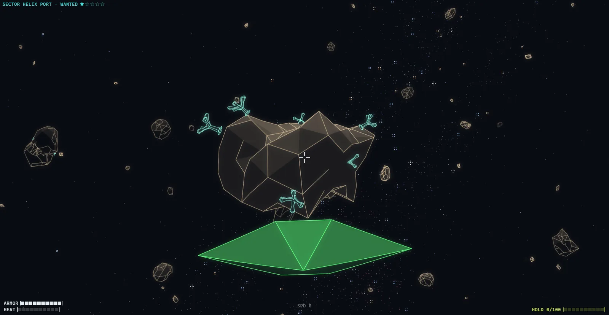
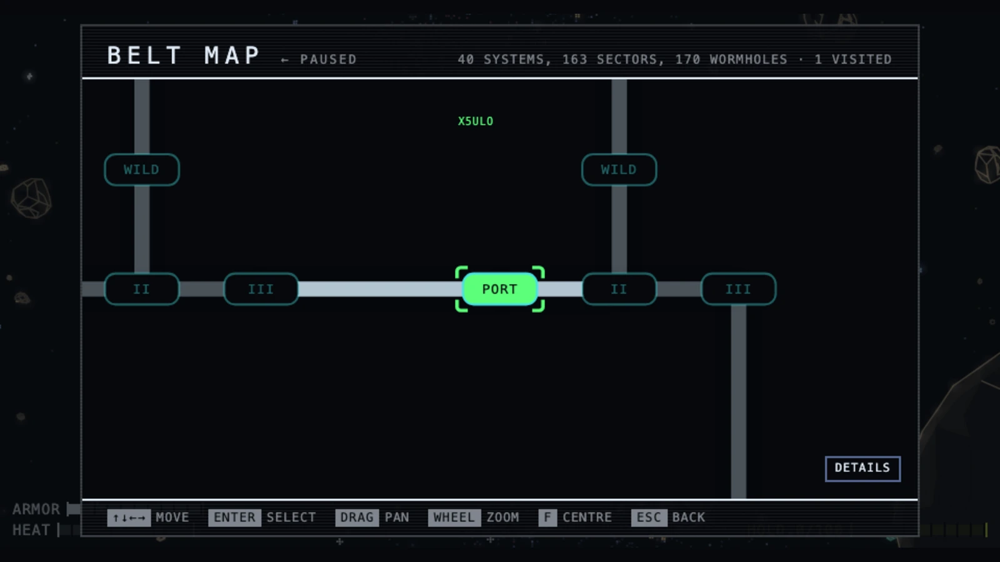
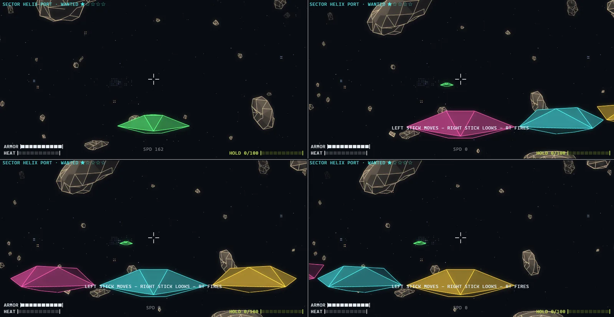

Fly a stolen ship through a living asteroid belt, with JX-9, your onboard AI and self-appointed DJ. Mine rocks, land in cities to trade and upgrade, take Guild work, and cross the belt through wormholes with bounty hunters behind you. Play solo or with up to four players in local split screen.
Steam Planned for Q1 2027 on Windows, macOS and Linux. The browser version is free to play now.






Explore, mine and trade
Cross the belt through wormholes, one system at a time, and keep a chart of where you have been. Break asteroids apart for metal, crystal and deuterium. Weapons and boost share the same heat, so a long fight costs you your escape.
Land in cities to trade at the Exchange, fit permanent upgrades at the Shipyard, or take work from the Guild: recover lost cargo, run a courier packet, supply a port with ore, or collect a bounty. Finished jobs pay, and the credit you build up opens better work.
Bounty hunters and wildlife
Working a sector raises your wanted level there, and hunters come looking. Move on and let the heat die down, or stay and fight for it.
The belt is inhabited. Reefs grow on asteroids, things attach themselves to your hull, probe swarms strip rocks and multiply, some rocks turn out not to be rocks, and pods of whales pass through on their own business. Derelict freighters can be flown into and picked over. Black holes are exactly as forgiving as they sound.
Local multiplayer
Up to four players can explore together in split screen. Each additional player needs a controller. Friendly fire is enabled by default and can be changed in the settings.
Built from seeds
The galaxy, the worlds, the ships and the soundtrack are generated rather than stored: there are no texture files and no audio files, just the numbers they grow from. The scene is drawn as glowing wireframe on WebGL 2. Read how the renderer got there.
Questions
What do I need to play it?#
Use a current version of Chrome, Edge, Firefox or Safari. No installation or account is required.
When is the Steam release?#
The desktop version is planned for Q1 2027 on Windows, macOS and Linux. You can wishlist Belt Nine on Steam. The browser version will remain free.
Does it run on Linux, SteamOS or the Steam Deck?#
You can play in a browser on Linux. On Steam Deck, use a browser in desktop mode.
A native Linux version is planned for Steam. Steam Deck compatibility has not yet been verified by Valve.
What are the desktop system requirements?#
The desktop release is planned for Windows 11, macOS on Apple Silicon, and Linux. See the Steam page for system requirements.
Does it work on a phone or a tablet?#
Yes. Open the browser version on your phone or tablet and play in landscape. Touch controls appear when you touch the screen.
Do I need a controller?#
You can play solo with a keyboard and mouse, a controller, or touch controls. In split screen, each additional player needs their own controller.